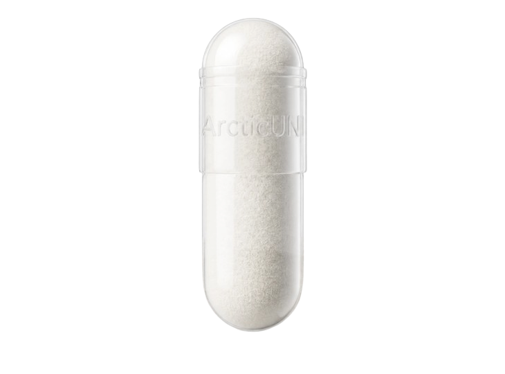

Origin
ArcticUNI is derived from sustainably harvested sea urchins in the crystal-clear waters of Northern Norway — one of the cleanest marine environments on Earth. Every batch is fully traceable from ocean to capsule.
A partnership between Marine Spark X and leading marine research institutions, united by a shared vision: bringing the purest marine calcium in the world to premium markets.
Tromsø · Where pristine Arctic currents create one of Earth's purest marine ecosystems.
Harvested from the pristine waters at 69°N, where Arctic currents create one of the purest marine ecosystems on Earth.
Responsible harvesting that protects marine biodiversity, ensuring the Arctic ecosystem thrives for generations to come.
A Marine Spark X initiative combining marine science expertise with premium supplement formulation.


The Product
250 mg of marine calcium per capsule, naturally rich in trace minerals. No additives. No shortcuts. 60 capsules per tin, 36-month shelf life.
| Calcium (marine-derived) | 250 mg per capsule |
| Source | Arctic sea urchin shell |
| Trace minerals | Mg, K, Zn, Sr, P |
| Standard dose | 1 capsule / day |
| Enhanced dose | 3 capsules / day (750 mg) |
| Capsules per tin | 60 |
| Shelf life | 36 months |
Quality & Science
Every batch is independently tested by EuroFins, a globally recognised laboratory network, ensuring our product meets the highest standards of purity and potency.
Formulated in full alignment with South Korea's Ministry of Food and Drug Safety standards. Documentation available for immediate regulatory submission.
Every tin can be traced back to a specific harvest location and processing date. Ocean to capsule, documented.
Comprehensive COA for every batch including lead, mercury, cadmium, and arsenic. All results well below regulatory limits.
Get in Touch
Interested in distribution, partnership, or learning more about ArcticUNI? We'd love to hear from you.
Gustav@marinesparkx.com